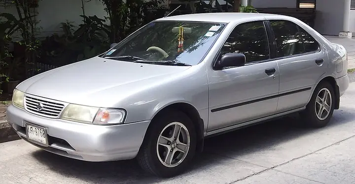
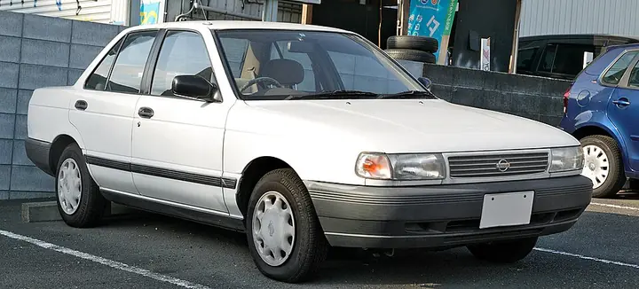
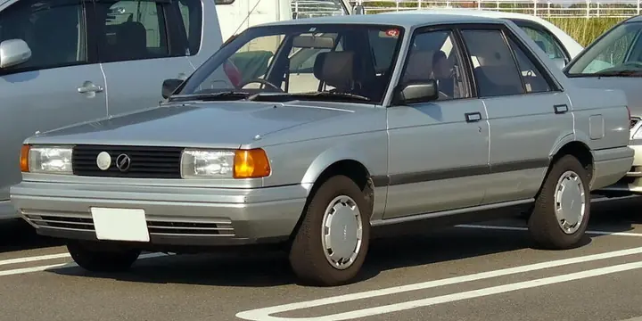
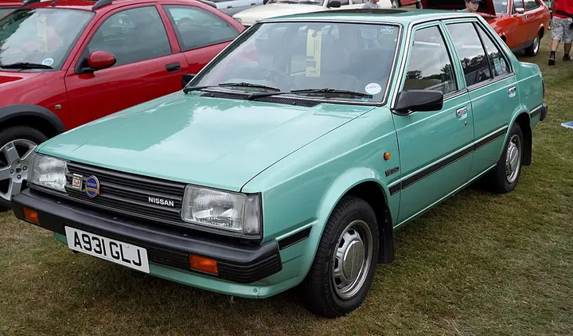
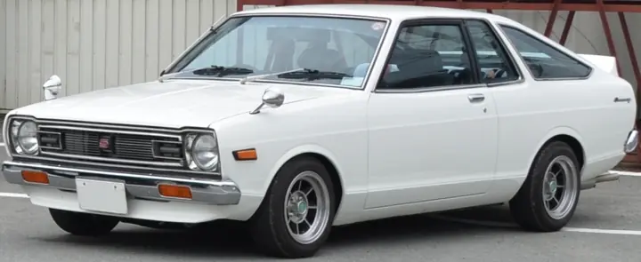
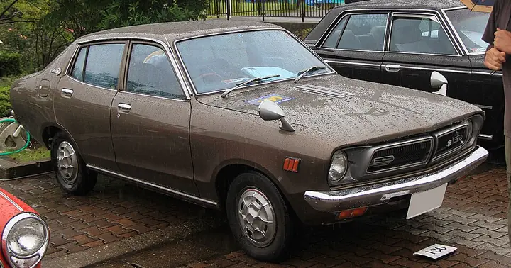
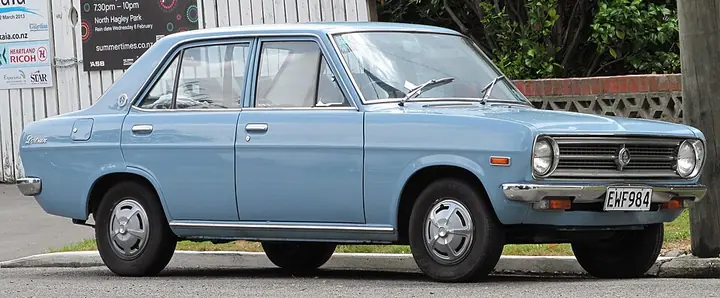
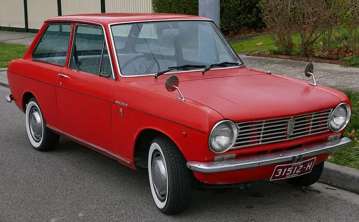

Nissan Sunny
Ninth generation (B15; 1998) · 1998–2004
Abstract
This generation of the Nissan Sunny was built 1998–2004 in Japan: Oppama Plant, Yokosuka, Kanagawa. Body styles: 4-door sedan. Layout: FF.


1Specifications
| Production | 1998–2004 |
|---|---|
| Assembly | Japan: Oppama Plant, Yokosuka, Kanagawa |
| Body style | 4-door sedan |
| Layout | FFF4 (1.5 L only) |
| Platform | Nissan MS platform |
| Engine | Petrol:1.3 L QG13DE I4 (B15)1.5 L QG15DE I4 (FB15)1.6 L SR16VE I4 (JB15)1.8 L QG18DD I4 (QB15)Diesel:2.2 L YD22DD I4 (SB15) |
| Transmission | 5-speed manual4-speed automaticCVT (1.8 L only) |
| Wheelbase | 2535 mm |
| Length | 4345-4360 mm |
| Width | 1695 mm |
| Height | 1415-1425 mm (FWD)1445 mm (AWD) |
| Weight | 1060-1230 kg |
| Related | Nissan Sentra (B15)Nissan Bluebird Sylphy (G10/N16)Nissan Almera (N16)Nissan AD/Wingroad (Y11) |
2Previous generations

_EX_Saloon_(front).jpg){kind=link}











.jpg){kind=link}

_01.jpg){kind=link}
3Generation by generation
Length +14% from the first to the last
B10 19663,820 mm
B110 19703,830 mm
B210 19733,950 mm
B310 19773,940 mm
B11 19814,050 mm
B12 19854,285 mm
B13 19904,326 mm
B14 19934,250 mm
B15 19984,345 mm
Weight +70% from the first to the last
B10 1966625 kg
B110 1970700 kg
B210 1973907 kg
B310 1977907 kg
B11 1981745 kg
B13 19901,028 kg
B15 19981,060 kg